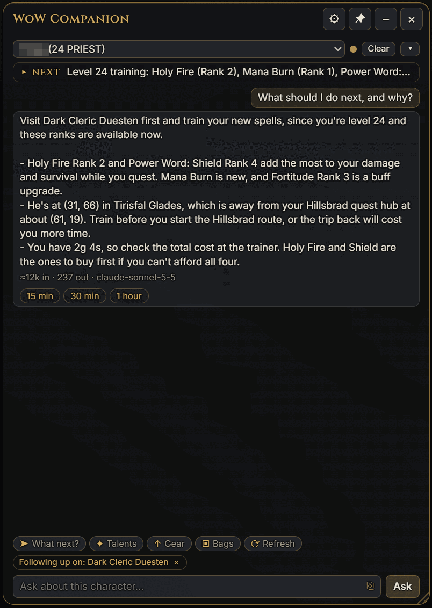

Know what to do next in World of Warcraft
WoW Companion plans your quests, draws the route on your map, and answers questions about your character in plain English.
A free app that sits beside the game, with a small addon that shows your plan inside it.
The app is for Windows 10 and 11 (64-bit) today. You'll need the game installed too.

What you need
- A Windows PC (Windows 10 or 11, 64-bit) with WoW: Forever installed.
- An account with an AI service, the same kind you might already use for chatting, like Claude or ChatGPT. The app connects to it to answer your questions.
WoW Companion doesn't come with its own AI. It uses an AI account you already have. Your plan, the numbered map route, the next-steps list and the in-game panel (with its gear upgrade and talent picks) work without one. Asking questions in the app needs one. A free model on your own PC works too. See AI options.
What it does for you
Next steps and quests
A short plan of what to do next, with numbered stops on your map.

Gear upgrades
See which items would be an upgrade, and where one comes from or how to make it.
Talent picks for your spec
Talent advice that follows the play style you choose.

Profession leveling plans
Step-by-step plans for raising each profession, including what to gather or buy.
Ask in plain English
Type a question like "What should I do next?" and read the answer in the app. This part uses your own AI account.

Map pins and an in-game panel
Your plan shows on the world map and the minimap, and in a small panel you can open with
/wowc.
How it works
Install the app
Download it and run the installer. It takes a couple of minutes.
It sets up the addon
The app's setup checklist can put the in-game addon in place for you.
Play and glance
Play as usual. Type
/reloadnow and then to refresh your plan, and glance at the panel.
Free and open source
WoW Companion is free. The code is open for anyone to read, on GitHub. It only reads what the game shows you and never plays for you.